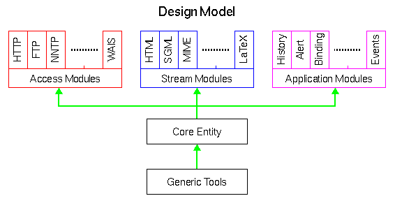

Basic Design Model
The main criteria behind the design of libwww was to make it easily extensible
as new Internet standards evolve for transportation and representation of
data objects. The philosophy was to make it possible to dynamically "plug-in"
new modules without touching the inner parts of the Library. On platforms
that support dynamic linking this can be used to change the functionality
of an application completely at runtime and eventually the Library can be
extended to support some of the new concepts of mobile code where new modules
can be down loaded from the network at runtime as they are needed in the
application. The result of this concept was a Library architecture consisting
of 5 main parts as illustrated in the figure below:

The figure is similar to a protocol stack where the lower layers provide
a set of services to the upper layers. This is also the case in the Library
where the "layering" is as follows:
-
Generic Utilities
-
The Library provides a large set of generic utility modules such as container
classes, string utilities, network utilities etc. They have the important
function to separate the upper layer code from platform specific implementations
using a large set of macros that makes the Library more portable. The modules
are used throughout the Library itself and can easily be employed in many
applications.
-
Core
-
This part is the fundamental part of the Library. The size of the core is
deliberately kept small and it is important to note that it can do nothing
on its own; all the functionality for accessing the network, parsing data
objects, handling user interaction, logging etc. is part of the upper modules
in the figure. The core provides a standard interface to the application
program for requesting a service but most often the handling of the request
itself takes place outside the core.
-
Stream Modules
-
All data is transported back and forth from the application to the network
and vice verse using streams. Streams are objects that accept blocks of
characters, pretty much as ANSI C FILE streams accept blocks of characters.
A block can be as small as one character but large blocks are normally preferred
for better performance. Often, even though not required, a stream has an
output to which it directs outgoing data. An example of a stream with no
output is a stream that acts like a black hole - it absorbs data without
ever sending it out again. However, the typical situation for a stream is
to have an output and to perform some kind of data conversion on the incoming
data before it is redirected to the output.
-
Access Modules
-
The Access modules are protocol specific modules that makes the application
capable of communicating with a wide range of Internet services. The Library
comes with a wide set of protocol access modules such as HTTP, FTP, Gopher,
WAIS, NNTP, Telnet, rlogin, TN3270, and the local file system, but new ones
can easily be added to the list.
-
Application Modules
-
The application modules are often specific for client applications including
functions that require user interaction, management of history lists, call
back functions, logging etc. The reference implementation of these modules
are often intended for character based applications like the
Line Mode Browser. More advanced clients
can override them, that is, a module with an identical interface is provided
by the application, and the loading of the default module suppressed.
When writing an application most of the code interacting with the Library
will consist of access modules, stream modules, and application modules.
These modules can either provide additional functionality or override existing
functionality in the Library in order to make use of more platform dependent
implementations. The latter will typically be the case with the application
modules which must be adjusted to a given graphic platform.
The User's Guide explains more on how to set up and
use the Access modules and the Stream modules in an application and how to
use the application modules. The rest of this document on the architecture
of libwww is devoted to describing the Core.
Henrik Frystyk Nielsen,
libwww@w3.org,
@(#) $Id$